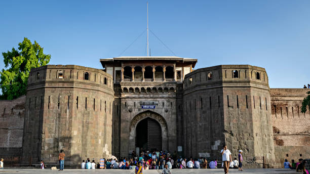
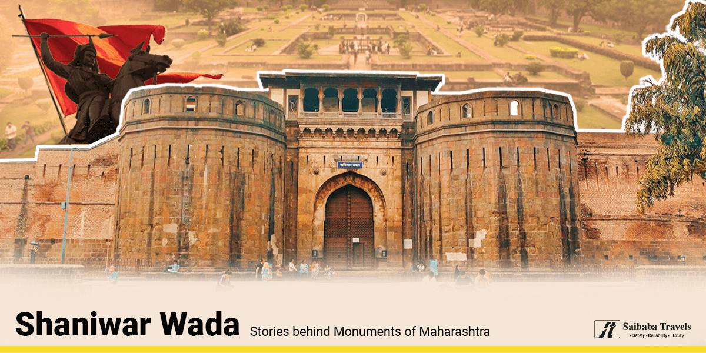

Shaniwarvada


Introduction
Shaniwar Wada is a historical fortification in the city of Pune, India.Built in 1732,it was the great seat of the Peshwas of the Maratha Empire until 1818. Following the rise of the Maratha Empire, the palace became the center of Indian politics in the 18th century.The fort itself was largely destroyed in 1828 by an unexplained fire, but the surviving structures are now maintained as a tourist site.
History
The Shaniwar Wada was a big building for Maratha Empire leaders. It should have been all stone, but part of it became brick due to a complaint. Later, the British attacked, and only the stone base survived. About 1758, almost a thousand people lived there.
In 1773, the leader Narayanrao was killed on his uncle's orders. People say his ghost asks for help on full moon nights. In 1818, Peshwa Bajirao II surrendered to the British, and a fire in 1828 destroyed most of the palace.
Bhagwan Swaminarayan visited in 1799 as asked by Bajirao II, mentioned in Haricharitramrutsagar.

> Some key points about Shanivar Wada:
Historical Significance:
Shanivar Wada was built in 1732 by Baji Rao I, the Peshwa of the Maratha Empire. It was a center of political and cultural activities during the Peshwa rule.
Architecture:
The palace complex was designed with intricate architecture, including massive gates, courtyards, halls, and fountains. The palace featured a wooden nine-storey tower, which was destroyed by a fire in the early 19th century.
Haunted Legend:
Shanivar Wada is often associated with a haunted legend due to the tragic death of a young prince. It is believed that his ghost haunts the premises, particularly on full moon nights.
Fire Incident:
In 1828, a major fire broke out in Shanivar Wada, leading to the destruction of a significant portion of the palace. The fire was a turning point in the decline of the Peshwa rule.
Tourist Attraction:
Today, Shanivar Wada is a popular tourist attraction in Pune. Visitors can explore the remaining structures, learn about its history, and witness the remnants of its former glory.
Cultural Importance:
The palace complex witnessed many cultural events, including music, dance performances, and political discussions during the Peshwa era.
Film and Literature:
Shanivar Wada has been featured in various films and literature, contributing to its cultural significance in popular media.